Priority Scoring for Jira — Documentation
RICE, WSJF and ICE scores on your Jira issues, a ranked backlog, Board Health per project and a Rovo agent that suggests scores.
Quick start
- Install Priority Scoring from the Atlassian Marketplace (free trial).
- Create a field: Jira Settings → Work items → Fields → Create new field, search for priority scoring and pick RICE, WSJF or ICE.
- Add the field to your project's screen, or to its issue types in a team-managed project.
- Open an issue, click the field, drag the sliders and save with the check mark.
- Open Apps → Priority Scoring for Jira for the ranking and Board Health. With Rovo on your site, ask the agent for suggestions.
On this page
Overview
Your team picks a framework, enters a few values per issue, and the app turns them into a score you can compare across the backlog. Each framework is its own field, so you can use one or all three.
| Framework | Formula | Best for |
|---|---|---|
| RICE | (Reach × Impact × Confidence) ÷ Effort | Product teams, user-facing features, roadmap planning |
| WSJF | (Business Value + Time Criticality + Risk Reduction) ÷ Job Size | SAFe teams, enterprise delivery, compliance-driven work |
| ICE | Impact × Confidence × Ease | Growth teams, experiments, fast iteration |
Install
Install the app once per Jira Cloud site. A Jira administrator does this.
- Open the Priority Scoring listing on the Atlassian Marketplace and click Try it free.
- Choose your Jira Cloud site and confirm.
- In Jira, open Apps in the top navigation. Priority Scoring for Jira is listed there.
Scores appear on issues only after the next two steps: create the fields, then add them to your screens.
Create the fields
The app brings three custom field types. Create one field for each framework you want to use.
- Click the gear icon → Work items (Issues in older Jira) → Fields → Create new field.
- Search for
priority scoringand choose Priority Scoring — RICE, — WSJF or — ICE. - Keep the default name so your team recognises the field, and click Create.
- Repeat for every other framework you want.
Screenshots of the Fields page and the Create field dialog
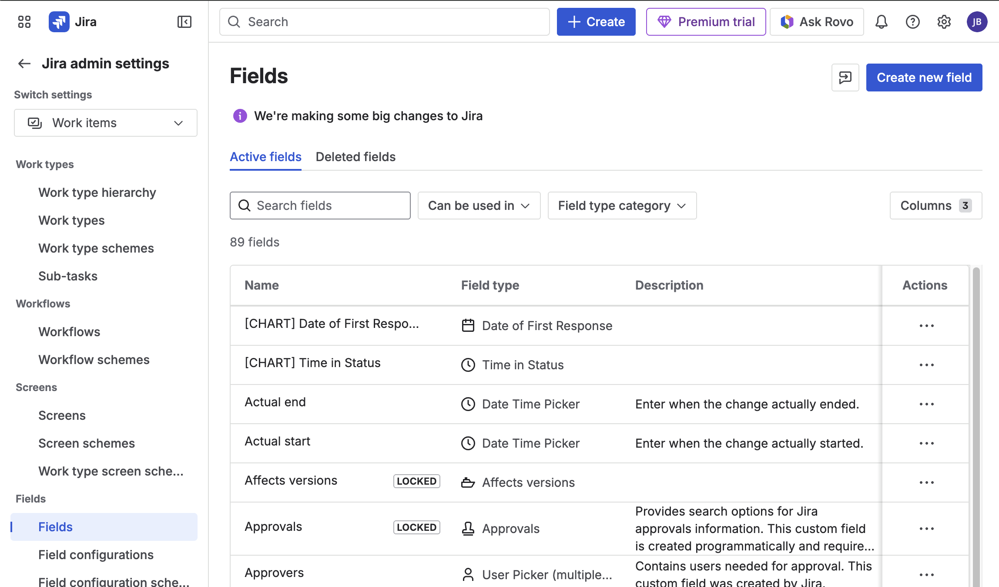
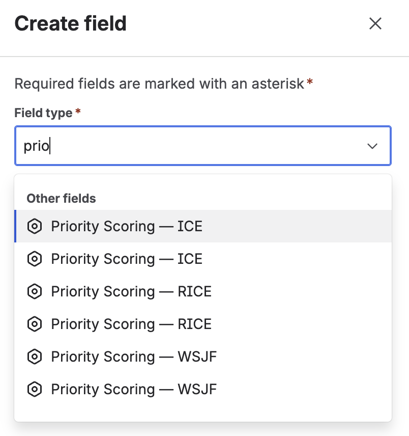
In the second screenshot each field type appears twice; on your site you see each one once.
Add the fields to screens
Jira shows a field only where it is on the project's screen. Do this once per project and field.
- Company-managed project: Jira Settings → Work items → Screens. Open the project's screen, for example “[Project] Scrum Default Issue Screen”, choose the field under Select Field… and click Add.
- Team-managed project: Project settings → Issue types, then add the field to each issue type.
Several screens
If your project uses separate screens for create, edit and view, add the fields to all of them, at least to the view screen, so scores are visible whenever you open an issue.
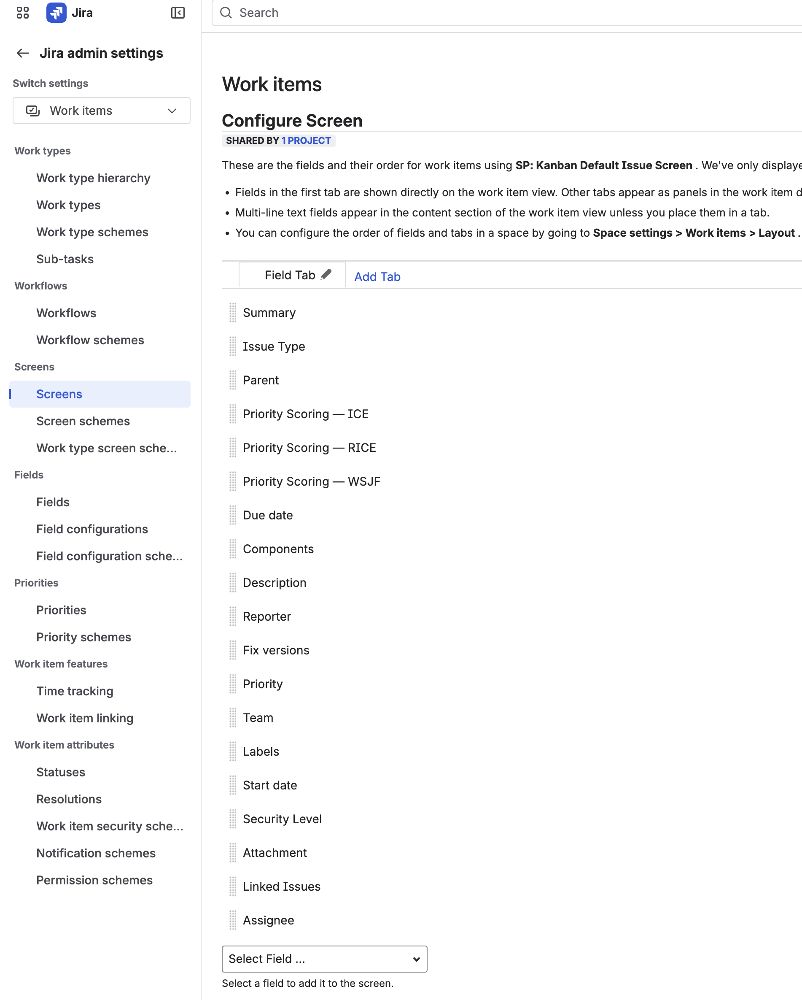
Score an issue
Each field shows a colored bar and the score, or Not scored. Click it to set the values.
- Open an issue and click Priority Scoring — RICE (or WSJF, ICE).
- Drag the sliders. The score updates while you drag.
- Click the check mark ✓ to save, or × to cancel.
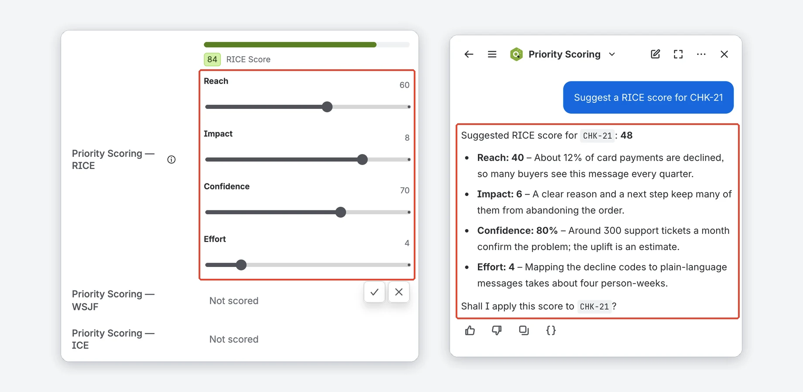
Nothing is saved until you move a slider. Saving needs the Edit Issues permission; without it, nothing is saved and the field says why. Colors: red below the Low threshold, yellow from Low, green from High. A Jira administrator sets both per framework.
Slider ranges, start values and default colors
| Framework | Sliders (range, start value) | Default colors |
|---|---|---|
| RICE | Reach 1–100 (10) · Impact 1–10 (5) · Confidence 10–100% in steps of 10 (80) · Effort 1–20 (5) | Red below 3, green from 10 |
| WSJF | Business Value, Time Criticality, Risk Reduction, Job Size: each 1–10 (5, 5, 3, 5) | Red below 2, green from 5 |
| ICE | Impact, Confidence, Ease: each 1–10 (5) | Red below 20, green from 50 |
Scores are rounded to one decimal. Where Jira shows the field as plain text, for example in issue lists, the score has a colored dot with fixed breakpoints (RICE 3/10, WSJF 2/5, ICE 20/50) that does not follow your thresholds.
Not sure which values to enter? Open Rovo on the issue, choose the Priority Scoring agent and ask, for example, “Suggest a RICE score for this issue”. See Rovo agent.
The app page
The app page shows Board Health and the ranking of one project. Open it from Apps → Priority Scoring for Jira. It has five tabs: Dashboard, Activity, Portfolio, Settings and Import.
On Dashboard, pick a Project and a Scoring Framework; the app remembers your last project. The toolbar has Refresh, Export CSV and Health Criteria….
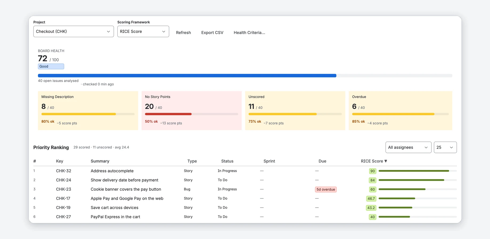
Priority Ranking
Every open issue of the project that you can open in Jira (see Only projects you can open in Jira), highest score first; issues without a score come last as Not scored. The line above the table counts scored and unscored issues and shows the average score.
- Click a column header to sort. Filter with All assignees (including Unassigned) and, if the issues are in sprints, All Sprints. Show 10, 25 (default), 50 or 100 rows.
- Due shows red for overdue (and Today), yellow for the next 7 days, and the date otherwise.
- Export CSV shows the ranking as CSV text: key, summary, type, status and score of every open issue, not just the current page or filter. Copy it into a spreadsheet; Close CSV hides it.
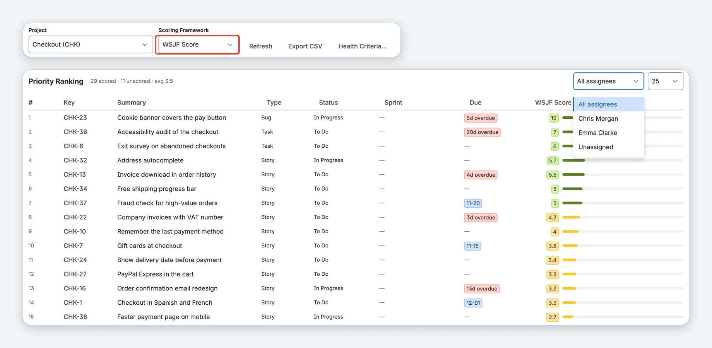
When does Board Health update?
Board Health is kept for up to 1 hour. Scores set with the sliders or through Rovo, and changes to the Health Criteria, update it right away. Refresh recalculates on demand. Scores changed outside the app, for example through a script or the Jira REST API, show up after the hour or after Refresh.
Only projects you can open in Jira
The app reads issues with its own permissions, so it first checks that you have Browse Projects. Project lists and the Portfolio show only projects you can open. A page or gadget set to another project, for example on a shared dashboard, shows “Priority Scoring cannot show <project>” with the reason and no issues.
Lists of issues also follow Jira's issue permissions, including issue security levels: the ranking on the app page and in the gadgets, the CSV export, the sample list in the import preview and the lists the Rovo agent returns contain only issues you can open. Two people looking at the same project can therefore see different rankings. Board Health and the Portfolio count open issues of the project without showing their keys or titles.
Other loading errors
If Jira refuses a search for a moment, the ranking and Board Health say what happened, with the HTTP status, instead of showing an empty project. If the app cannot check your issue permissions for a moment, it shows no issue list and says why (with the HTTP status). Click Refresh after a moment. For a project you cannot open, ask a Jira administrator for Browse Projects or choose another project.
Board Health
Board Health rates how complete a project's open issues are, from 0 to 100, using the criteria you switch on. Open means not Done, so In Progress counts too.
- Grades: Excellent 80–100 · Good 60–79 · Fair 40–59 · Poor below 40.
- Tiles: each criterion shows the affected issues (4 / 19), the share that is fine (79% ok) and the points it subtracts (−3 score pts). Green at 100% ok, yellow from 70%, red below. Fix the biggest penalty first.
Choose the criteria per project
Click Health Criteria…, choose a project, switch criteria on or off, or start from SCRUM Defaults or KANBAN Defaults. Click Save & Refresh. Jira administrators and that project's administrators can change them; everyone else sees them read-only.
The eight criteria and their defaults
| Criterion | What it checks | Default |
|---|---|---|
| Stale Issues | Not updated within the stale threshold (7–180 days, default 60) | On |
| Missing Description | No description text | On |
| Missing Story Points | No story points set | On |
| Unscored | No RICE, WSJF or ICE score yet | On |
| Missing Assignee | No assignee | Off |
| Overdue | Due date in the past | Off |
| Missing Priority | Jira's Priority field is empty or “None” | Off |
| Missing Labels / Components | Neither labels nor components set | Off |
SCRUM Defaults turns on Stale, Missing Description, Missing Story Points, Unscored and Overdue. KANBAN Defaults turns on Stale, Missing Description, Unscored, Missing Assignee, Missing Priority and Missing Labels. When Stale is on, a slider below it (7–180 days in steps of 7) sets the threshold for this project; it overrides the site-wide value from Settings.
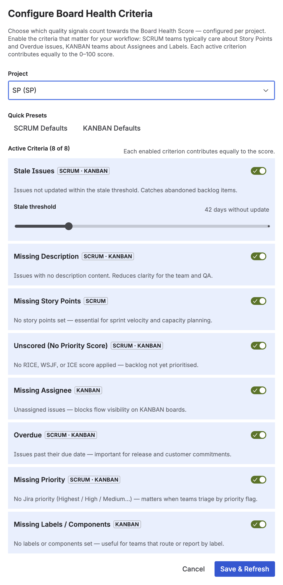
How the score is calculated
Every enabled criterion counts equally: with 4 criteria each can subtract up to 25 points, with 5 up to 20, and so on, so the score always stays between 0 and 100. Board Health looks at up to 100 open issues, those not updated for the longest time first. A project with fewer open issues is analysed completely.
Rovo agent
The Priority Scoring agent works in Rovo chat. It suggests, explains and applies scores and reports Board Health. It needs Rovo on your site.
Open Rovo from the Atlassian navigation bar (Ask Rovo), click the agent selector and search for Priority Scoring. Then ask, for example:
- “Suggest a RICE score for PROJ-123” — values with a reason each, nothing written.
- “How healthy is my backlog in project SP?” — Board Health with the counts of your enabled criteria.
- “Score all unscored issues in project SP with WSJF” — bulk scoring in Auto mode.
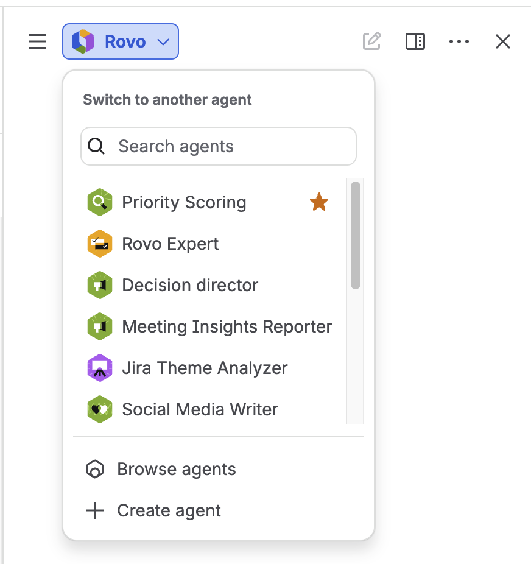
Apply modes
A Jira administrator decides in Settings what the agent may write:
- Suggest only — text suggestions; you set the sliders yourself. Nothing is written.
- Confirm (default) — the agent asks “Shall I apply this score?” in the chat. One issue at a time.
- Auto — no question in the chat, and several issues per request, up to the bulk limit.
Before every write, Atlassian shows its own security dialog; confirm it. The app cannot turn it off. After you change the mode, open a new Rovo chat.
Everything you can ask
| What you can ask | What the agent does | Mode |
|---|---|---|
| “Suggest a RICE score for PROJ-123” | Reads the issue and proposes values with a reason for each. Does not write to Jira. | Any |
| “Apply a WSJF score to PROJ-42” | Saves the score on the issue's Priority Scoring field | Confirm or Auto |
| “Score all unscored tasks in project SP” | Finds unscored issues, suggests values and applies them in one run, up to the bulk limit | Auto |
| “Explain the score for PROJ-55” | Shows the saved dimension values and what each one means | Any |
| “What is the board health for project SP?” | Returns the Board Health score, grade and the counts of your enabled criteria | Any |
| “Find unscored issues in project PROJ” | Lists issues that are stale, miss a description or story points, or are unscored (for one framework if you name it). Checks the 50 oldest open issues for unscored, 25 for the other categories. | Any |
| “Which issues in the current sprint need a WSJF score?” | Lists the open issues of the active sprint (or a sprint you name) and which have no score. Needs an open sprint. | Any |
| “Compare the health of PROJ, CORE and INFRA” | Summarises up to 5 projects from their Board Health of the last hour. Other projects need a Check in the Portfolio tab first. | Any |
What the agent checks before it writes
Framework names work in any case (WSJF, wsjf). A score is saved only when every dimension of that framework is given. An unknown framework, missing dimensions or values of another framework are rejected with a message, and nothing is written. If Jira refuses a search, for example because of a mistyped project key, the agent says so instead of returning an empty result.
Your Jira permissions apply: the agent only reads projects and issues you can browse and applies a score only to issues you may edit. Other issues stay unchanged and are named in the answer. The apply mode is checked again on every write: in Suggest only nothing is written and bulk scoring runs only in Auto, even from an older chat.
Bulk scoring
In Auto mode the agent scores several issues per request, at most as many as the bulk limit allows. If more are unscored, ask again for the next batch. In Suggest only and Confirm it says so and changes nothing.
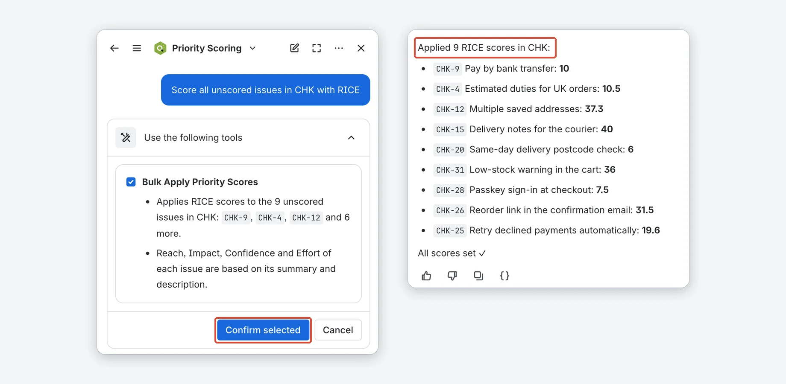
Several confirmation dialogs?
Rovo may split a large run into batches, and Atlassian shows its security dialog for every batch of write actions. This is normal; confirm each one.
Issue comments
With “Write Rovo reasoning to issue comments (opt-in)” on in Settings (off by default), the agent adds a comment with its reasoning whenever it applies a score. The comment needs Add Comments on the issue; without it the score is still saved and the agent says no comment was added.
Example comment
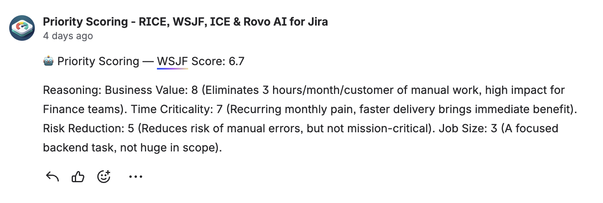
Settings
The Settings tab holds the site-wide settings. They save automatically after a short delay. Only Jira administrators can change them; everyone else sees them read-only, with a note saying who can.
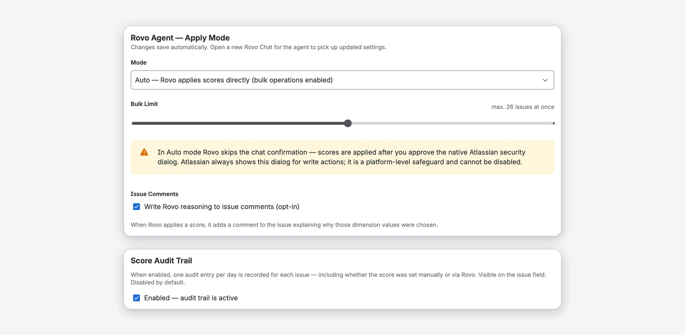
| Setting | Values | Default |
|---|---|---|
| Rovo Agent — Apply Mode | Suggest only, Confirm, Auto (see Rovo agent) | Confirm |
| Bulk Limit (shown in Auto) | 1–50 issues per run | 10 |
| Issue Comments | Rovo writes its reasoning as a comment | Off |
| Stale threshold (Board Health Settings) | 7–180 days in steps of 7; a project can override it in its Health Criteria | 60 days |
| Score Audit Trail | One entry per issue, framework and day | Off |
| Dimension Weights | ×1 to ×5 per dimension, except Effort and Job Size | ×1 |
| Score Thresholds | Low and High per framework | RICE 3/10, WSJF 2/5, ICE 20/50 |
Weights and thresholds are shown for the framework selected on the Dashboard tab, so switch the framework there first.
Score Audit Trail
When it is on, the app records one entry per day for each issue and framework: the score, the change since the last entry, and whether it was set manually or via Rovo. On the issue, click ▸ Audit trail under the score to see the 10 latest entries.
How long entries are kept
An issue's entries are deleted 90 days after its score was last saved. Turning the trail off stops new entries; it does not delete old ones.
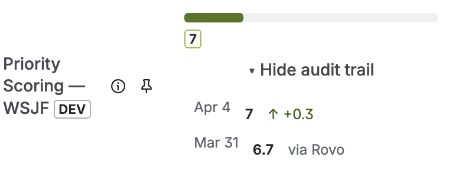
Dimension Weights
Give a dimension more influence from ×1 (default) to ×5, for example Reach ×3 for a growth team using RICE, or Business Value ×2 for revenue-critical WSJF work. Reset all weights to ×1 restores the defaults.
Why Effort and Job Size have no weight
They are the denominator. A weight of ×2 there would halve the score, the opposite of what you expect. To de-emphasise effort, raise the other weights instead. In ICE all three dimensions can be weighted.
Score Thresholds
Scores below Low are red, from Low yellow, from High green. Low must be smaller than High. The thresholds apply to the issue field, the ranking and the ranking gadget.
Slider ranges
Low 0–20 / 0–5 / 0–100 and High 1–50 / 1–15 / 1–500 for RICE / WSJF / ICE.
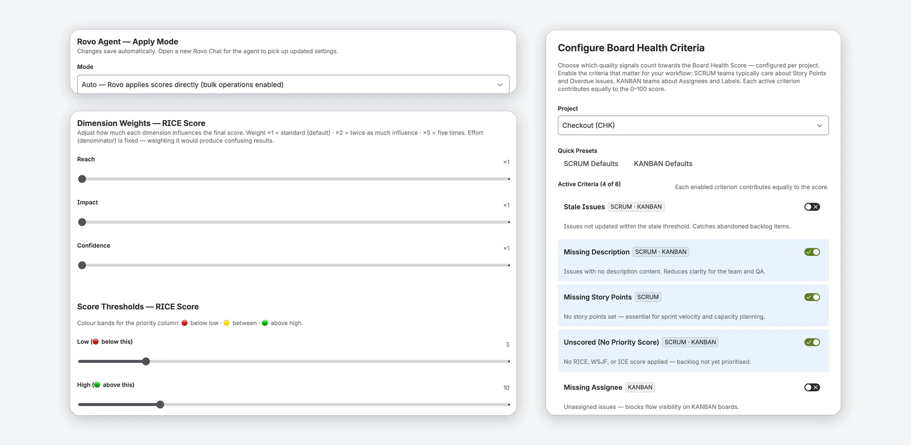
Portfolio
The Portfolio tab compares Board Health across the projects you can open (up to the first 100), worst score first.
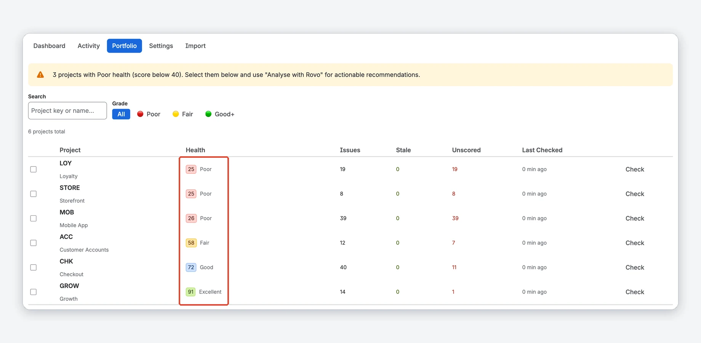
It shows results from the last hour; other projects say Not checked. Click Check on a row, or Check Unchecked for all of them one after another.
Columns, filters and Analyse with Rovo
- Columns: Project key and name, Health with grade, Issues analysed, Stale, Unscored and Last Checked (minutes ago).
- Search by project key or name and filter by Grade (All, Poor, Fair, Good+). A banner counts the projects rated Poor (below 40).
- Tick up to 5 projects to see their average score and totals. Analyse with Rovo then shows a message to paste into a Rovo chat.
Activity log
The Activity tab lists the last 50 scores the Rovo agent applied, across all frameworks and modes, for issues you can open. Use it to check what Rovo did and whether a bulk run finished.
Columns
Columns: Time, Issue (a link), Framework, Score and Mode (confirm or auto); 25 rows per page by default (10, 25, 50 or 100). For one issue's history, use the audit trail.
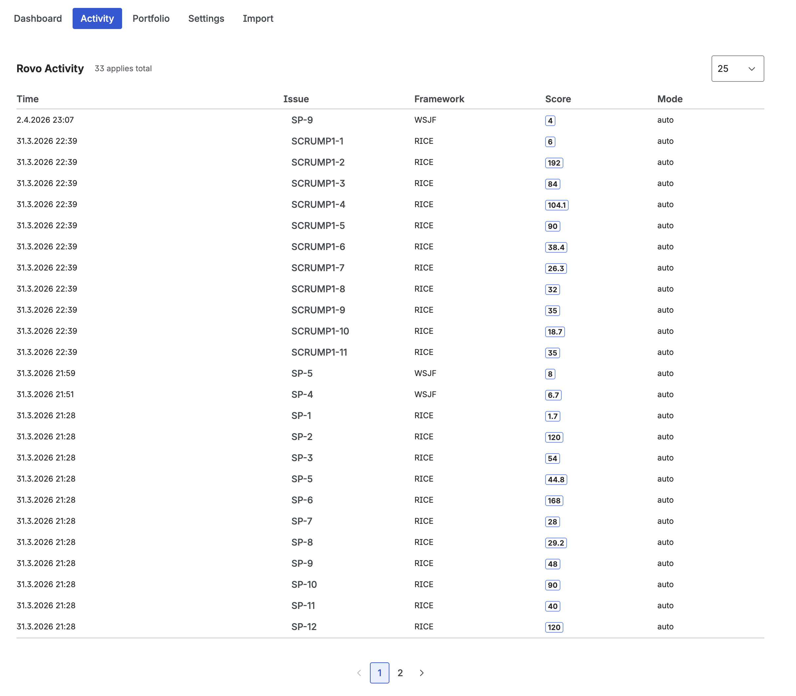
Import from another app
Used another RICE, WSJF or ICE app before? The Import tab copies its scores into Priority Scoring, one project at a time. You need permission to browse the project and to edit its issues.
- Switch on Enable Import Feature and confirm with I understand — enable import (import overwrites values and cannot be undone; the choice is saved per user).
- Select the Target Project and click Scan for Existing Score Fields. Each result shows the framework, the field and Score only or With dimensions.
- Click Preview & Import [Framework] Scores. Nothing is written yet: the dialog shows how many open issues will be imported or skipped, with a sample of 10.
- Click Overwrite N issues — import now.
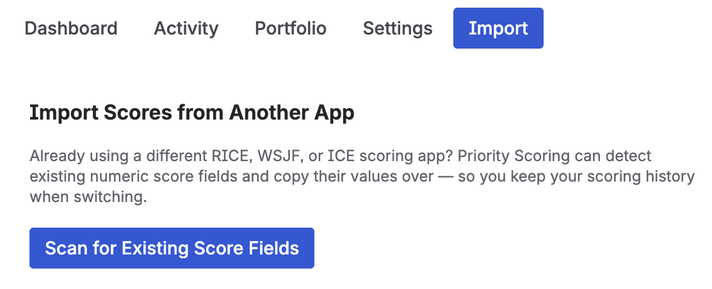
Limits and what gets overwritten
- Only open (not Done) issues are imported.
- A run covers the first 500 open issues of the project, oldest created first. If there are more, the dialog says how many are not covered and the button reads Import first 500 of N issues — import now. Need more? Contact support (pre-filled email).
- A run takes a few seconds, up to about 20.
- Import writes only to Priority Scoring's own fields. An existing Priority Scoring value of the imported framework is replaced, including scores set by hand. Other apps' fields and Jira's built-in fields are never changed.
- Import is only available on the Import tab, not through the Rovo agent, so the preview is never skipped.
How field detection works
The scan is a name-based guess. A field is offered if it is numeric, does not belong to Priority Scoring, and its name contains the whole word RICE, WSJF (or “weighted shortest”) or ICE. It can miss fields and offer unrelated ones (“ICE Cream Count” would match), which is why the preview shows the field name first.
- Detected: “RICE Score”, “RICE Priority”, “WSJF”, “WSJF Score”, “ICE Score”, and dimension fields such as “RICE Reach” or “RICE Effort”.
- Not detected: “Priority Score”, “Scoring Value”, “Custom Prioritization” (no framework word).
Score only vs. with dimensions: if the other app stored only a total, only the total is imported and Explain Priority Score has nothing to explain until you re-score the issue. If it stored separate dimension fields, the app takes those values and calculates the score with its own formula and your weights, so the result can differ from the old app's number.
Dashboard gadgets
Two gadgets bring the data to any Jira dashboard:
- Priority Scoring — Board Health: score, grade and criterion tiles of one project, with a Refresh button. It uses the project's Health Criteria.
- Priority Scoring — Priority Ranking: the ranking of one project with key, summary, type, status and score. You choose the project, the framework and the rows per page (10, 25, 50, 100).
- Open a Jira dashboard, click Edit, then Add gadget.
- Search for Priority Scoring and add one of the two.
- In its settings, choose the project (and, for the ranking, the framework) and save.
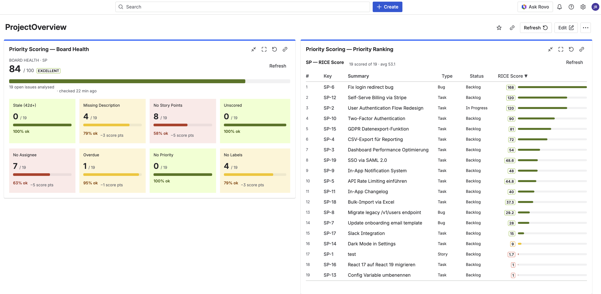
Viewers need Browse Projects on the project (see Only projects you can open).
FAQ & troubleshooting
Why don't the priority score sliders appear on my Jira issues?
The field is almost always missing from the project's screen. Go to Jira Settings → Work items → Screens, open the screen of your project and add the Priority Scoring field; in a team-managed project add it under Project settings → Issue types. See Add the fields to screens.
Rovo applied scores but Board Health still shows the issues as "Unscored".
The Priority Scoring field is probably not on the project's screen. Rovo saves the values in the app, but Jira shows no value in the field until the field is on the screen. Fix the screen setup, then click Refresh on the app page.
Rovo says a score could not be applied.
The agent checks the framework and the dimension values before it writes anything. Name one of RICE, WSJF or ICE and give every dimension of that framework — RICE: Reach, Impact, Confidence, Effort; WSJF: Business Value, Time Criticality, Risk Reduction, Job Size; ICE: Impact, Confidence, Ease. Until the values are complete, nothing is written and the existing score stays as it is. In a bulk run, only the affected issues are skipped; the others are scored as usual. The agent also leaves an issue unchanged when you don't have permission to edit it in Jira, and names it in its answer.
A gadget says "Priority Scoring cannot show" a project.
You don't have permission to browse that project in Jira, or the project no longer exists. Priority Scoring checks this before it shows issues or scores, because it reads them with its own app permissions (see Only projects you can open). Ask a Jira administrator for the Browse Projects permission on the project, or edit the gadget and choose a project you can open.
Why can't I change the Priority Scoring settings?
Only Jira administrators can change Priority Scoring settings, because they apply to everyone on the site. Everyone else sees the current values read-only. Ask a Jira administrator to change a setting; the Health Criteria of a project can also be changed by that project's administrators.
Explain Priority Score says no score has been saved, but the issue shows a value.
Explain Priority Score uses the dimension values the app stored when the score was set with the sliders or by Rovo. A score set from outside (REST API, script) or imported as a total has no dimension values. Re-score the issue with the sliders or Rovo to enable explanations.
I changed the Apply Mode but Rovo is still using the old mode.
The agent reads the apply mode when a chat starts. Open a new Rovo chat after changing the mode. Every write is still checked against the current mode: in Suggest only, nothing is written, even from an older chat.
In Auto mode, Rovo still shows a confirmation dialog. Is this a bug?
No. In Auto mode the agent skips its own question in the chat, but Atlassian always shows a security dialog before a write action. The app cannot turn it off. Confirm it.
The Board Health score looks wrong or didn't change after Refresh.
Refresh recalculates right away. Board Health looks at up to 100 open issues, those not updated for the longest time first, so in a larger project a recently edited issue may not be in the sample. Also check that the score fields are on the project's screen and that the criteria you expect are enabled in Health Criteria.
Rovo's list of unscored issues doesn't include all my issues.
The agent checks the 50 oldest open issues of the project for missing scores, because Jira cannot search these score fields. For a complete list use the Priority Ranking on the app page: it lists all open issues, and unscored ones show Not scored.
Story points are not recognised by the "Missing Story Points" criterion.
The app recognises the two most common story points fields of Jira Cloud without any setup. If your points are still not detected, contact support with your Jira site URL.
Do existing scores update automatically when I change Dimension Weights?
No. Existing scores are not recalculated. They update when a score is next saved on each issue, with a slider or by Rovo. After a big weight change, ask Rovo in Auto mode to re-score the issues in bulk.
What is the difference between RICE, WSJF and ICE?
RICE (Reach, Impact, Confidence, Effort) is popular for product and roadmap planning. WSJF (Weighted Shortest Job First) comes from SAFe and ranks by cost of delay per job size. ICE (Impact, Confidence, Ease) is a lightweight framework for quick scoring. Priority Scoring has a field for each of them.
Where is my Priority Scoring data stored?
The scores are values of the Priority Scoring fields in your Jira site. The app's own data (dimension values, settings, audit trail) is stored in Atlassian Forge storage for your site. The app runs on Atlassian's infrastructure and sends no data to external servers. Details in the Privacy Policy.
How do I uninstall the app?
Go to Jira Settings → Apps → Manage apps, find Priority Scoring and click Uninstall. Atlassian keeps the app's stored data (scores, settings, audit trail) for 28 days after the uninstall and then deletes it, see the Privacy Policy. The custom fields stay in Jira until you delete them under Settings → Work items → Fields.
Support
Questions, bugs or feature requests? We typically respond within 1–2 business days (Monday to Friday).
Email: support@janekbehrens.de
Bug reports & feature requests: github.com/janekbehrens/priority-scoring-issues
Support page: common questions and what to include in a bug report
Legal: Privacy Policy · Terms of Service · Security Policy